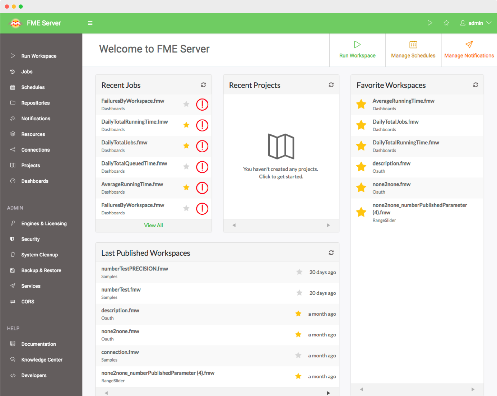

As developers we were working with this huge unknown of how users interact with FME Server. The users were in a galaxy far, far away, and we needed the Millenium Falcon. I'm working to bring the user's experience to the front of our minds as developers and become the first thing we think about when we create features.
